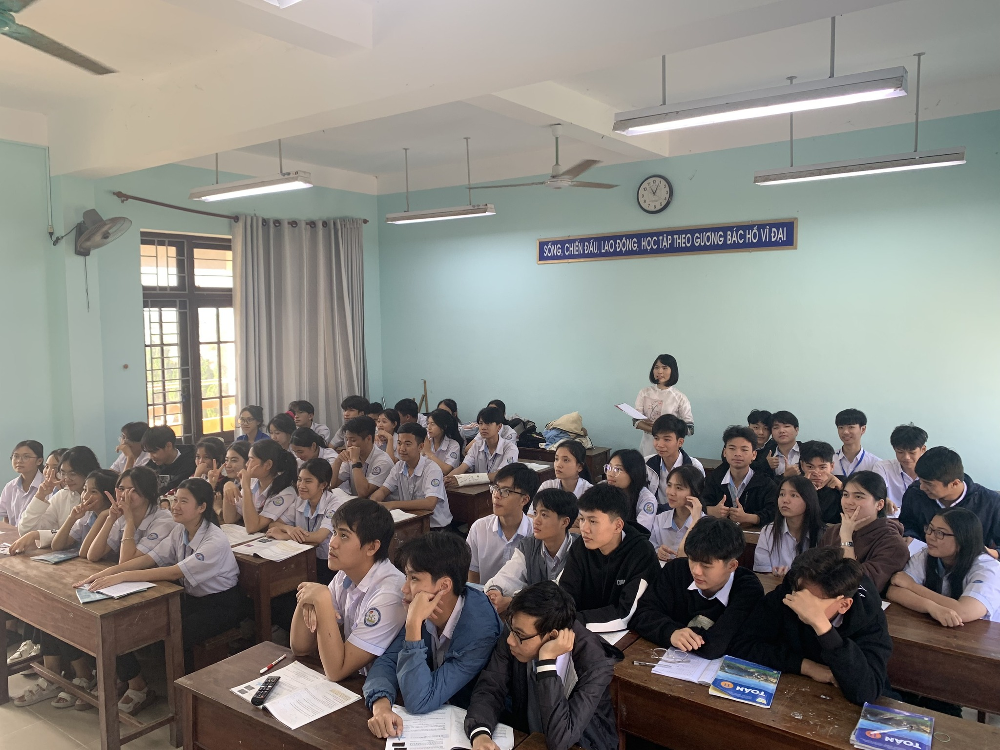

CÂU CHUYỆN TRUYỀN CẢM HỨNG
- Hôm ấy, cơn mưa rào đầu mùa kéo đến bất chợt, bầu trời xám xịt, từng cơn gió mạnh quật vào cửa sổ lớp học. Học sinh ai nấy đều xao nhãng, hướng mắt ra ngoài ngắm những cánh hoa phượng cuối mùa run rẩy trong gió. Nhưng trên bục giảng, cô Thuý vẫn kiên nhẫn giảng bài, giọng nói trầm ấm át đi tiếng mưa rơi.
- Bỗng nhiên, điện mất. Cả lớp chìm trong bóng tối lờ mờ, chỉ còn tiếng gió rít qua khe cửa. Đám học trò nhốn nháo, có đứa còn cười rúc rích vì nghĩ rằng thế nào thầy cũng sẽ cho nghỉ. Nhưng cô chỉ lặng lẽ bước tới bảng, với lấy viên phấn và viết lên đó một câu hỏi:
- "Nếu là một cánh buồm nhỏ giữa biển lớn, các em sẽ làm gì khi gặp bão?"
- Lớp học bỗng im bặt. Không ai trả lời ngay. Cô tiếp tục nói, giọng đều đều nhưng ẩn chứa sức mạnh:
- "Cuộc đời cũng như một hành trình ra khơi, sẽ có những ngày nắng đẹp, nhưng cũng không thiếu những cơn giông tố. Những lúc ấy, nếu ta sợ hãi, buông xuôi, cánh buồm sẽ rách nát, con thuyền sẽ trôi dạt vô định. Nhưng nếu ta vững vàng, biết cách điều chỉnh hướng đi, bão tố rồi cũng sẽ qua. Và chính những cơn bão ấy sẽ khiến cánh buồm thêm mạnh mẽ, giúp nó vươn xa hơn."
- Lũ học trò ngồi lặng đi. Bất giác, ai cũng thấy lòng mình trùng xuống. Cả lớp như hiểu ra rằng, bài học hôm nay không chỉ là một công thức toán học hay một bài văn nghị luận, mà là một bài học về cuộc đời.
- Bên ngoài, cơn mưa vẫn chưa ngớt, nhưng trong lòng mỗi người, một ánh sáng nhỏ đã được thắp lên. Những cánh buồm tri thức vẫn tiếp tục căng gió, dù ngoài kia có giông tố thế nào đi nữa.
